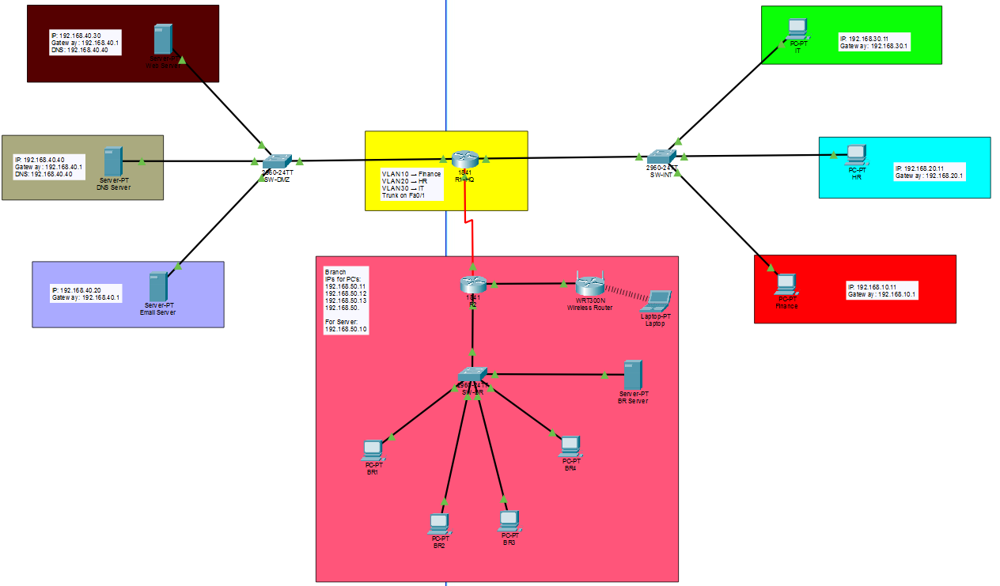
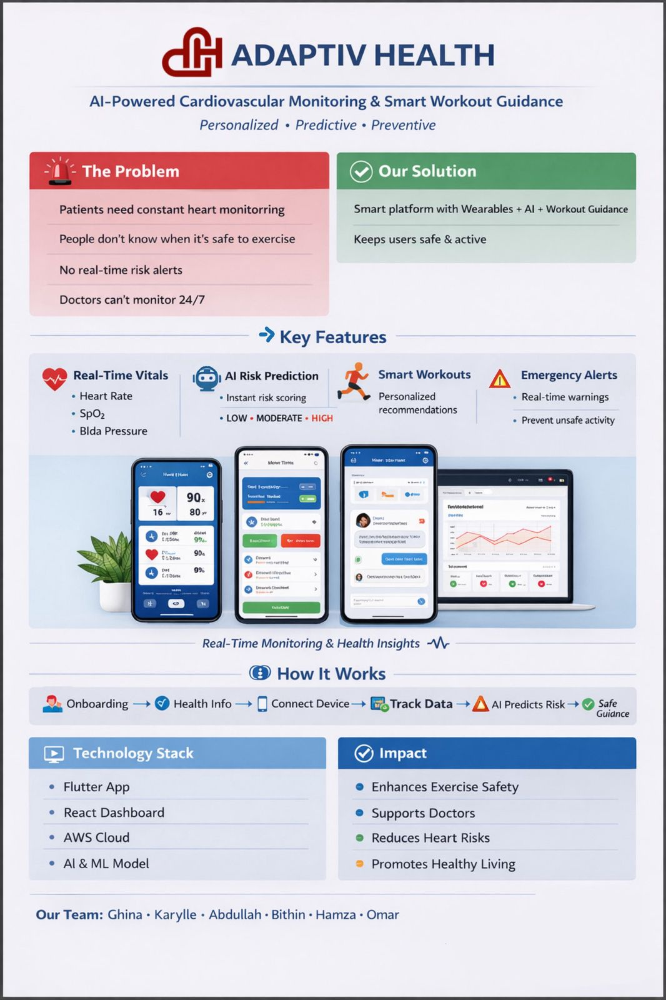

Academic group project · Cisco Packet Tracer
Enterprise Network Infrastructure & Security
Independently handled all networking design, configuration and troubleshooting for this academic group project, while teammates prepared the documentation. Built and simulated a multi-site enterprise network in Cisco Packet Tracer with departmental VLANs, inter-VLAN routing, ACLs, a segmented server environment and branch wireless connectivity. Tested connectivity and resolved DHCP and default-gateway issues.
Cisco IOSVLANsACLsDHCP / DNSRouting
My role: Sole contributor to the networking implementation; teammates handled documentation. Select the diagram to view full size.

University capstone · Six-person group project
Adaptiv Health — AI-Powered Cardiac Monitoring
Contributed to cybersecurity implementation, security research and technical documentation for a cardiovascular monitoring and rehabilitation platform developed by a six-person university team. The wider system combines vital-sign monitoring, machine-learning risk scoring, exercise guidance and clinician-facing tools.
My focus: Security-related implementation, research into protecting healthcare data, and project documentation.
CybersecurityTechnical documentationFlutter / ReactFastAPIAWSML
The team reported 96.9% model accuracy; this is a project-reported metric, not a clinical validation claim.